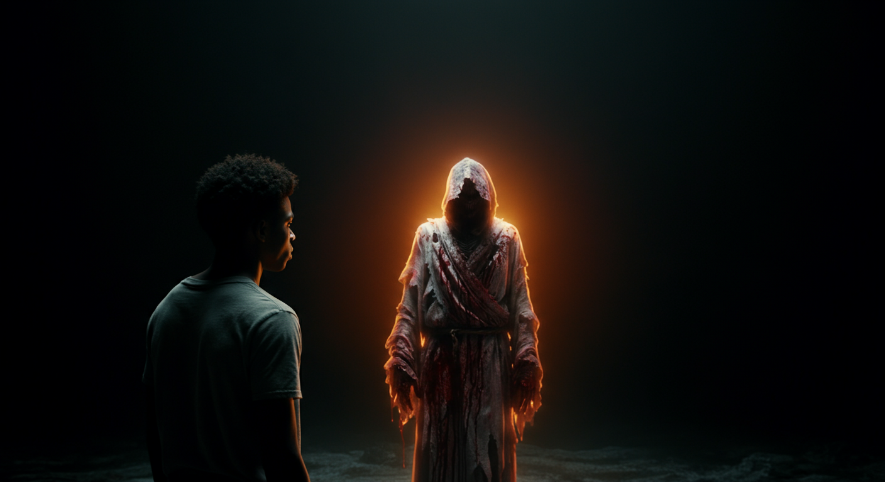

PART 1: THE INVISIBLE PRISON
I want you to look at the thumbnail of this video one more time.
"I tried to get rich and cut off God."
To most religious people, that sounds like a headline from a backslider’s confession. But for me, it wasn’t a backslide. It was a calculated, desperate attempt at survival.
You see, for the first part of my life, God wasn't a Father. He was a burden. He was the "Man in the Sky" who had given us a list of rules that felt like an iron cage. Where I grew up, your relationship with God was measured by what you didn't do.
We don't dance. We don't listen to secular music. We don't do this, we don't do that.
[LONG PAUSE]
And the consequence for every single slip-up was the same: Hell.
If you listened to the wrong beat, you were going to hell. If you moved your body the wrong way, you were going to hell. It wasn't that I loved God; it was that I was terrified of Him. I was guilt-driven. I lived every day thinking that if I didn't get every single rule right, this omnipresent surveillance camera—which is how I viewed God—would find a reason to wipe my name out of the Book of Life forever.
I want you to feel that for a second. Imagine living with a God who is just waiting for you to fail so He can disqualify you.
I had big dreams. I wanted to be successful. I wanted to make an impact. I wanted to build things that would change society. But even that dream felt like a sin. In the environment I was raised in, we were told this world belongs to the sinners. We’re just passing through. To want something big, to want to be "someone," was seen as pride.
They taught me that staying small is humility. That God loves the small, the quiet, the people who don't ask for much.
I tried. I really tried to live that life. I tried to be the humble, small person who just followed the rules. But life was brutal. And inside that cage of legalism, I found no evidence that God was even real. All I found were rules. All I found was guilt.
So I made a choice.
[PAUSE]
I decided to leave the one they called God. If there was no evidence, why was I carrying the burden? I decided to forget the rules, forget the guilt, and go after what I actually wanted: Money. Success. Destiny.
I thought that if I could just get rich, I could finally be free from the surveillance camera in the sky.
PART 2: THE WALL OF DILIGENT FUTILITY
I was diligent. I want to emphasize that. I didn't just walk away and start partying. I walked away and started working.
I worked all day long. Hours upon hours. Days turned into weeks, weeks into months, and months into years. I was coming from nothing—literally nothing—and I was determined to make something meaningful out of my destiny. I was doing online businesses, I was studying, I was executing. I was the definition of "hustle."
But here is the part that haunts me when I think back:
I never made even a single cent.
[PAUSE]
Not one.
I was working like a slave, but the resources weren't there. It was one of the most difficult moments of my life. I had cut off God to find freedom, but I ended up in a different kind of prison—the prison of futility.
And the worst part? The guilt didn't leave. Even though I had consciously decided to ignore God, subconsciously, those beliefs were buried deep in my system. I felt guilty for resting. I felt guilty for enjoying a meal. I felt guilty for doing anything that wasn't "work."
I was exhausted. I was at the end of my rope. I was a man trying to build a kingdom on a foundation of sand, and it was collapsing.
I started scrolling my phone late at night, listening to preachers—preachers I used to ignore—and motivational speakers. I was looking for a crumb of hope. I reached a point where I was just tired of the "beliefs." I didn't want a religion. I wanted healing.
I wanted to know: Is God real? Or is this all just a massive, guilt-ridden lie?
I wanted to connect the dots. I was tired of the truth being scattered. I wanted to know how the systems worked. How God worked. If the spiritual realm was even a thing.
That hunger... that was the beginning of the shift.
PART 3: THE SEVEN-DAY FAST & PROPHETIC DREAMS
In January of that year, my hunger hit the ceiling. I couldn't live one more day with the "maybe."
I decided to fast. Intermittent fasting—eating only once a day after the sun went down. I decided to do this for seven days. No fanfare. No church program. Just me and my hunger for the truth.
That is where I had my first encounter.
[POINTING TO INFOGRAPHIC - THE SHIFT]
Look at the framework on your screen. This is what I call "The Shift." It's the moment you stop defending what you were taught and start seeking what is actually true.
During those seven days, something happened in my mind. It was like a veil was being ripped away. All the scattered information, all the dots I had been trying to connect for years—they started clicking into place.
The level of clarity was insane. I wasn't just thinking; I was seeing. I ended up writing two full books during that week. Not for a publisher, just for me. I had to capture the sheer volume of revelation that was pouring in.
I finished that fast, and I wasn't the same person. I viewed the world differently. I felt like God had finally answered my questions. I felt ready to conquer. I felt like I had the keys to success.
But I didn't know that I was just entering the training ground.

I started having dreams. Not just "dreams," but cinematic, prophetic experiences. I would dream something, and then it would happen exactly as I saw it.
I got obsessed. I started searching online for interpretations. Some were right, some were wrong. But God was using those dreams for something much deeper than "predicting the future."
He was using them to show me the true state of my heart. I realized something critical: Bitterness drains your spiritual energy.
DREAM DIAGNOSTIC: THE BITTERNESS LOOP
If I harbored anger, the enemy looped the same dream.
In my dreams, I would see people who had wronged me in the past, and I’d be angry. I realized that as long as I was bitter, they kept appearing. The moment I genuinely forgave them in my heart, they stopped appearing. Or better yet, we’d be walking together in love in the dream.
I realized that what that preacher had said was true: The failure and the pain I had been through were just God shaping a version of me that was compatible with the assignment. He wasn't building my business yet. He was building my character. He was building my spirit.
PART 4: THE TRAP OF SPIRITUALIZING EVERYTHING
I was happy with this milestone. I was praying one hour a day. I had worship music in the background constantly. I felt like I was finally "spiritual."
But then, I walked into a trap.

Because I was so sensitive to the prophetic and the dreams, I started over-interpreting everything. If a bird flew a certain way, I’d ask what it "meant" spiritually. If I stubbed my toe, I’d look for a spiritual law I had broken.
I was trying to spiritualize every single detail of reality. And that is the fastest path to deception.
[PAUSE]
I had to find a system. I needed a way to discern the voice of the Lord that wasn't based on my own overactive imagination.
My method became very simple: I would find a silent, peaceful place. I’d pick up a pen and a piece of paper. And I’d write.
I learned that if I felt clarity, peace, and joy after writing it down—that was the Holy Spirit. If I felt anxiety or confusion, it wasn't Him. I always looked for joy and peace first, even before the clarity. And I would wait for God to confirm it two or three times before I took a leap.
I was starting to find my purpose. I stopped trying to do "online business" the way everyone else was doing it. I stopped chasing the money directly and started focusing on studying and becoming.
I became so sensitive that I knew what would happen before it happened—like a sharp intuition.
But there was still a massive piece of the puzzle missing. I knew "about" the Holy Spirit. I knew "about" spiritual systems. But I hadn't truly met the King.
PART 5: THE VISION OF THE CRUCIFIED KING
Months passed. Then, one night, without any warning... I had a vision.
In the vision of the night, I saw Jesus.

But He wasn't the Jesus I saw in the paintings. He wasn't wearing a golden crown or clean, white robes. He was wearing torn, ragged clothes. He was covered in blood.
I stood far away from Him at first. I was cautious. I wanted to make sure this wasn't the devil pretending to be Him. I was looking for the trick.
Then He spoke. He said, "They want to crucify me."
[PAUSE]
That’s when I knew it was Him. It’s Jesus who gets crucified.
In the vision, I took Him to my home. And then, He said something that reminded me of what God said to Solomon. He looked at me and asked:
"What would you like me to give you?"
I was stunned. I didn't know much about high-level spiritual things back then, but I mentioned everything I could think of. I said: "Wisdom. Grace. Mantles. Authority. Gifts."
I just threw it all out there.
All He did was stretch out His hand toward me.
And I blacked out.
[LONG PAUSE]
When I woke up—still in the vision—I was surrounded by four angels dressed as men. Jesus was sitting right there beside me, still in those torn clothes, still covered in blood. I was confused. I expected Him to be risen and clean.
One of the angels looked at me and said that I had been blacked out for four days. And that the "transaction" had been finished.
I remember blacking out at my home compound, but I woke up in a shop.
Then, I woke up in reality.
I sat up, expecting a massive miracle to happen immediately. I expected my life to change in five minutes because Jesus had just come to my house.
But nothing happened.
[PAUSE]
I expected more encounters. I expected the superpower to dial up to 100. But for many months after that, there was nothing. Total silence.
I had been told by the Spirit to honor that moment with fasting, praise, and thanksgiving. But I ignored it. I went about my life like a normal person. I didn't realize that the "transaction" wasn't a magic trick—it was a seed.
It took me almost a year to realize what had actually happened to me. That prophetic sight—the "knowing"—became a constant companion. I started to take my study of God seriously.
And that’s when I made the syllabus.
PART 6: THE SYLLABUS, THE FALL, AND THE BIRTH
I wasn't satisfied with surface-level Christianity anymore. Believers would tell me, "The most important thing is salvation and walking in Godliness." And that’s true. But my hunger wouldn't let me stay there.
I wanted to know how everything worked. I wanted to know how omnipresence made sense. I wanted to know the mechanics of the spirit.
Because as it says in Proverbs 25:2:
"It is the glory of God to conceal a matter; to search out a matter is the glory of kings."
I spent months in deep research. I would sit for hours, and the level of clarity I got was insane. Every time I finished a study, I was left in a state of absolute awe. I was marveling at the majesty of God.
I started realizing His true nature. We weren't supposed to worship Him because we were afraid of hell. We were supposed to worship Him to fellowship with Him. To be in His presence.
All the guilt I had carried for years—the guilt from the legalistic church—was gone. Completely healed. I knew what a believer was supposed to look like according to God, not according to the society I grew up in.
But then... pride started to grow.
[POINTING TO FRAMEWORK - THE TRAP]
I knew too much. At least, I thought I did.
I started seeing the "gaps" in everyone around me. I saw their wrong beliefs. I saw their limiting mindsets. I saw their fear-based religion. I was so angry at them for staying in those old ways—especially the people older than me.
I corrected them constantly. I felt like the smartest person in the room. I felt like I had mastered the systems of the world. I knew how altars worked, how spiritual laws worked, I knew the extent of the devil's power. I thought I was in total control of reality.
And that is exactly when life went wrong.
I prayed every prayer I knew. I applied every spiritual law I had mastered. I did everything "right."
And yet... I failed.
And I didn't just fail in private. I failed in front of the very people I had looked down on. The people I had corrected. The people I thought I was "better" than.
I did everything I could, and nothing changed.
That failure was the greatest mercy God ever gave me.
[PAUSE]
It broke the pride. It stripped away the arrogance. I realized that dominion—true dominion—is not just about what you know. It’s not just about mastering a system.
Dominion is a consequence of Grace and Mercy.
I became humble because I had to. life orchestrated circumstances that my "knowledge" couldn't fix. I became patient with others. I became compassionate toward their limiting beliefs because I realized I was just as broken as they were.
I reached a point where it was impossible not to believe God is real. But I was finally learning obedience. I was learning to discern the voice of the Lord without the filter of my own ego.
God had to rebuild me. He had to take me through a season of training first, because if I had succeeded when I was proud, I would have fallen much harder later.
In His mercy, He preserved me. In His mercy, He enlightened me.
And that is why I am here.
I am not here to give you a set of rules. I am not here to tell you how to avoid hell. I am here to help you gain Clarity, Mastery, and Empowerment.
I am here to help you connect the dots that God helped me connect. I am here to show you that there is a pathway to the victorious life, but it doesn't run through your ego. It runs through your surrender.
This is why THE PATHWAY MASTERCLASS was born.
I want to take you deep. I want to show you the frameworks that healed my soul and opened my eyes. All the interactive infographics I’ve used today—the ones that helped me see the architecture of reality—are available for you to explore.
Because you were never meant to walk this path alone.
I’ll see you in the next one.
[PAUSE]
[FADE TO BLACK]